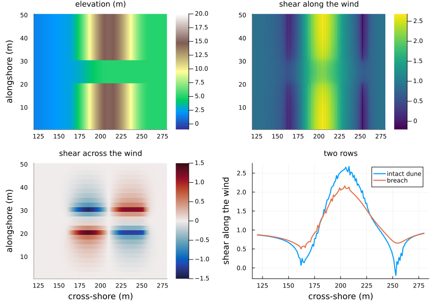
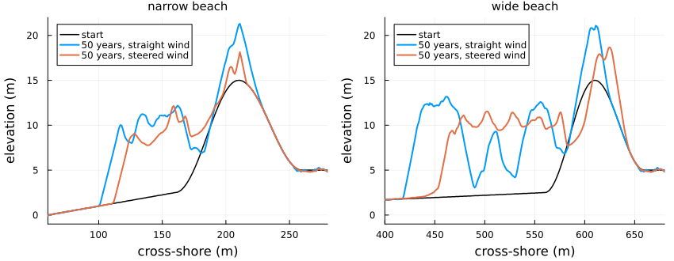
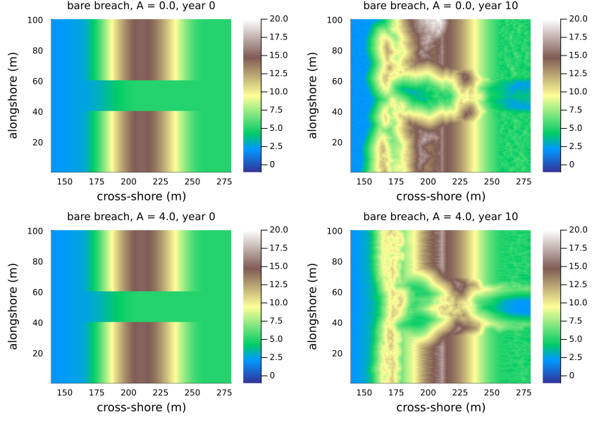

Wind over dunes
Simon Frost
- Overview
- The wind over a breached foredune
- How the slab model uses it
- Fifty years on the source’s beaches
- The breach still fills
- Summary
Overview
In the coastal dune model of Teixeira et al. (2023) (vignette 20) the wind is the same everywhere: it blows straight onshore and picks sand up equally on a crest and at the foot of a slope. Only the shadow behind high ground, where no sand is picked up and every slab lands, feels the topography. Real wind speeds up over a dune and slows at its foot, and turns where it crosses a ridge at an angle. Vignette 27 found that a breach through the foredune fills from its flanks rather than growing into a blowout, and noted that the wind is not steered.
This vignette adds the steering, beyond the source, and asks what it changes. The shear stress of the wind over low hills has a classical linear theory (Jackson and Hunt, refined by Weng and colleagues); Kroy et al. (2002) put its component along the wind into the form used by dune models, and Schwämmle and Herrmann (2005) add the component across it. With ĥ the Fourier transform of the height of the surface and kx, ky the wave numbers along and across the wind, the shear stress relative to that over a flat bed is
along = 1 + F⁻¹{A kx (kx + i B |kx|) / |k| ĥ}
across = F⁻¹{A kx ky / |k| ĥ}A sets the strength of the response (Kroy et al. (2002) use 4) and B (0.25) moves the strongest wind a little upwind of a crest. dune_wind computes both over the height above the sea’s reference surface. In the lee it uses the envelope of the surface and the shadow lines, as Kroy et al. (2002) do, since the theory does not describe separated flow.
ENV["GKSwstype"] = "100"
using EcologicalCellularAutomata
using CellularAutomataCore
using Plots
using Random
using StatisticsThe wind over a breached foredune
The blowout scenario of vignette 27 breaches the foredune of the narrow beach in the middle fifth of the rows, down to 5 m. With speedup = 4:
prob = problem(:dune_formation; scenario=:blowout, alongshore=50, years=1, seed=1)
p = merge(prob.p, (; speedup=4.0))
wind = dune_wind(prob.u0, p)
cols = 120:280
plot(heatmap(cols, 1:50, prob.u0.topo[:, cols] .* p.h; c=:terrain, clims=(-1, 20),
title="elevation (m)", ylabel="alongshore (m)"),
heatmap(cols, 1:50, wind.along[:, cols]; c=:viridis, title="shear along the wind"),
heatmap(cols, 1:50, wind.across[:, cols]; c=:balance, clims=(-1.5, 1.5),
title="shear across the wind", xlabel="cross-shore (m)",
ylabel="alongshore (m)"),
plot(cols, [wind.along[5, cols] wind.along[25, cols]]; lw=2,
label=["intact dune" "breach"], ylabel="shear along the wind",
xlabel="cross-shore (m)", title="two rows"); layout=(2, 2), size=(850, 600),
titlefontsize=10, left_margin=4Plots.mm, bottom_margin=3Plots.mm)
The wind’s shear more than doubles up the seaward face of the dune, is strongest just before the crest, and drops to a fraction of its free value at the foot of the dune, where the rising ground slows it. Across the wind it turns towards the breach upwind of the crest and away from it in the lee: it is funnelled through the gap. But the shear is lower in the breach than on the intact crest on either side. In linear theory a gap is a dent in the ridge, and the wind over a dent speeds up less than over the ridge.
How the slab model uses it
With speedup > 0, dune_step! computes the wind from the state at the start of each iteration. A bare dry cell gives up a slab with probability (1 - ρ) pe0 × along (at most 1), so sand leaves fast-wind cells more often. At each cell it crosses, a flying slab moves one row alongshore, to the side across points to, with probability |across| / along (at most 1). The default, speedup = 0, is the source’s wind.
Fifty years on the source’s beaches
One run of 50 years on each of the source’s narrow and wide beaches, with hops of 5 cells on 20 rows, with and without steering; then the breach of vignette 27 (10 m wide, 50 rows) and a wider breach left bare of plants (20 m wide, 100 rows, 30 years).
function wind_run(scenario, speedup; rows=20, years=50, seed=1, bare=false)
prob = problem(:dune_formation; scenario, alongshore=rows, years, seed,
pmap=(; speedup))
p, u, h = prob.p, deepcopy(prob.u0), prob.p.h
if bare
gap = (rows * 2 ÷ 5 + 1):(rows * 3 ÷ 5)
u.pioneer[gap, :] .= 0
u.stabilizer[gap, :] .= 0
end
snaps = [u.topo .* h]
for t in 1:(50years)
dune_step!(u, p, t, Random.Xoshiro(hash((prob.seed, t, :dune))))
t % 250 == 0 && push!(snaps, u.topo .* h)
end
return (; snaps, first=dune_measures((; topo=prob.u0.topo); h),
last=dune_measures(u; h))
end
cases = [(:narrow, 0.0, 20, 50, false), (:narrow, 4.0, 20, 50, false),
(:wide, 0.0, 20, 50, false), (:wide, 4.0, 20, 50, false),
(:blowout, 0.0, 50, 50, false), (:blowout, 4.0, 50, 50, false),
(:blowout, 0.0, 100, 30, true), (:blowout, 4.0, 100, 30, true)]
runs = Dict(zip(cases,
fetch.([Threads.@spawn wind_run(c[1], c[2]; rows=c[3], years=c[4], bare=c[5])
for c in cases])))
nothing[(beach=c[1], speedup=c[2], width=round(Int, runs[c].last.width),
volume_gain=round(Int, runs[c].last.volume - runs[c].first.volume))
for c in cases[1:4]]4-element Vector{@NamedTuple{beach::Symbol, speedup::Float64, width::Int64, volume_gain::Int64}}:
(beach = :narrow, speedup = 0.0, width = 165, volume_gain = 541)
(beach = :narrow, speedup = 4.0, width = 154, volume_gain = 387)
(beach = :wide, speedup = 0.0, width = 252, volume_gain = 1040)
(beach = :wide, speedup = 4.0, width = 227, volume_gain = 908)Steering narrows the dune on both beaches and cuts its gain in volume, most on the narrow beach. The source’s medians are 150 m and +461 m³/m on the narrow beach, 230 m and +1084 m³/m on the wide one (vignette 20). With steering the widths come close to the source’s (154 and 227 m), but the gains fall below its (387 and 908 m³/m). The source’s wind is not steered, so this is another way to narrow the dune, not the source’s.
plot([begin
plot(vec(mean(runs[(s, 0.0, 20, 50, false)].snaps[1]; dims=1)); color=:black,
lw=1.5, label="start", title="$s beach", titlefontsize=10,
xlabel="cross-shore (m)", ylabel="elevation (m)", legend=:topleft,
xlims=s === :wide ? (400, 680) : (60, 280), ylims=(-1, 22))
plot!(vec(mean(runs[(s, 0.0, 20, 50, false)].snaps[end]; dims=1)); color=1,
lw=2, label="50 years, straight wind")
plot!(vec(mean(runs[(s, 4.0, 20, 50, false)].snaps[end]; dims=1)); color=2,
lw=2, label="50 years, steered wind")
end
for s in (:narrow, :wide)]...; layout=(1, 2), size=(850, 330),
left_margin=4Plots.mm, bottom_margin=4Plots.mm)
Why narrower: the steered wind is fastest on the seaward faces, so it strips sand from young, thinly vegetated dune fronts and passes it landward. New dunes on the beach stay lower, and the dune toe (the first cell above 3 m) moves seaward more slowly. On the wide beach the old crest, scoured on its seaward face, moves landward, and more sand crosses it to be lost behind the domain.
The breach still fills
The crest of the breach (its lowest row) every five years:
crest(z, rows) = minimum(vec(maximum(z[rows, 150:end]; dims=2)))
gap10, gap20 = 21:30, 41:60
[(case=c[5] ? "bare breach, 20 m" : "breach, 10 m", speedup=c[2],
crest_m=[round(crest(z, c[5] ? gap20 : gap10); digits=1) for z in runs[c].snaps])
for c in cases[5:8]]4-element Vector{@NamedTuple{case::String, speedup::Float64, crest_m::Vector{Float64}}}:
(case = "breach, 10 m", speedup = 0.0, crest_m = [5.0, 10.3, 12.5, 13.5, 13.5, 14.4, 15.0, 15.0, 15.3, 15.3, 15.2])
(case = "breach, 10 m", speedup = 4.0, crest_m = [5.0, 10.9, 13.6, 13.8, 14.2, 16.1, 16.8, 14.8, 15.7, 15.4, 15.1])
(case = "bare breach, 20 m", speedup = 0.0, crest_m = [5.0, 5.6, 10.3, 11.2, 12.6, 12.5, 12.9])
(case = "bare breach, 20 m", speedup = 4.0, crest_m = [5.0, 9.2, 11.5, 12.6, 13.3, 13.6, 14.0])plot([heatmap(140:280, 1:100, runs[(:blowout, a, 100, 30, true)].snaps[k][:, 140:280];
c=:terrain, clims=(-1, 20), title="bare breach, A = $a, year $(5(k - 1))",
titlefontsize=10, xlabel="cross-shore (m)", ylabel="alongshore (m)")
for a in (0.0, 4.0) for k in (1, 3)]...; layout=(2, 2), size=(850, 600),
left_margin=4Plots.mm, bottom_margin=3Plots.mm)
Steering does not open the breach. It fills as fast as in a straight wind or faster, with or without plants on its floor. Two things fill it. The walls stand 10 m above the floor of a breach 10 or 20 m wide, so avalanches pour sand into it; and the funnelled wind brings the beach’s sand into it from both sides. The faster shear on the breach floor would scour it, but in linear theory the floor’s shear is below the crests’, and the extra sand outweighs it. Behind the bare breach, though, the wind that comes through scours the plateau down by 2 to 3 m, towards the groundwater surface, and fans the sand out landward: a deflation hollow like the one behind a blowout, wider with steering.
Real blowouts deepen because the flow through a gap accelerates into a jet: separation at the gap’s edges and steering by its walls are beyond the linear theory, which holds for low, gentle hills. Where the slopes are those of a real foredune, the computed shear is only indicative; speedup is better read as a sensitivity than as a calibrated strength.
Summary
| Question | Result |
|---|---|
| Does the computed wind follow the theory? | Yes: over a sinusoidal ridge it matches the closed form to rounding (in the package’s tests) |
| Where is the wind fastest? | On the seaward face, just before the crest; slowest at the dune’s foot |
| Does it turn into a gap? | Yes, upwind of the crest; it turns out again in the lee |
| What does it do to the source’s dunes? | Narrows them (towards the source’s widths) and cuts their gains in volume |
| Does a breach become a blowout? | No: it fills as fast or faster, from its walls and from the funnelled sand; the land behind a bare breach is scoured |
Kroy, Klaus, Gerd Sauermann, and Hans J. Herrmann. 2002. “Minimal Model for Aeolian Sand Dunes.” Physical Review E 66 (3): 031302. https://doi.org/10.1103/PhysRevE.66.031302.
Schwämmle, Veit, and Hans J. Herrmann. 2005. “A Model of Barchan Dunes Including Lateral Shear Stress.” The European Physical Journal E 16: 57–65. https://doi.org/10.1140/epje/e2005-00007-0.
Teixeira, Manuel, Erik M. Horstman, and Kathelijne M. Wijnberg. 2023. “Conceptualizing Aeolian Sediment Transport in a Cellular Automata Model to Simulate the Bio-Geomorphological Evolution of Beach–Dune Systems.” Journal of Marine Science and Engineering 11 (7): 1278. https://doi.org/10.3390/jmse11071278.